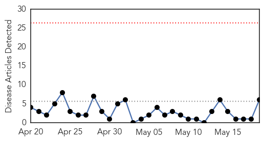
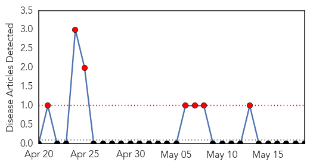

Dengue Fever
30-Day Web Trend
0 alerts, 0 warnings

30-Day Twitter Trend
0 alerts, 0 warnings

Article Locations
Article Confidences

Top Articles:
- 0.952
- Dengue in Mandla: 24 test positive
- 0.940
- Study shows why dengue fever prevention efforts often fail
- 0.940
- Study shows why dengue fever prevention efforts often fail
- 0.541
- Fumigation is passe, now a fish to control spread of dengue
- 0.522
- Court orders govt to eradicate dengue
- 0.516
- Punjab ordered to control dengue
Top Tweets:
-
No tweets found for May 19, 2014
Yellow Fever
30-Day Web Trend
7 alerts, 0 warnings

30-Day Twitter Trend
0 alerts, 0 warnings

Article Locations

Article Confidences

Top Articles:
-
No articles found for May 19, 2014
Top Tweets:
-
No tweets found for May 19, 2014